“Make yourself comfortable”
September 2026. A release in two directions. Reading got more comfortable: a second, calmer reader, columns, paper and new page-turn effects. And the library learned to look back: a reading journal, statistics, and browsers for authors, series and notes. Below are the key changes; the full list is in the changelog.
You now have two reader modes. Comfort is for those who want to just read: the app picks the margins and the spacing for the screen and the font, you pick the columns from those that fit, and a slim bar with the progress stays at the bottom. Colour, face and size live in one small window.
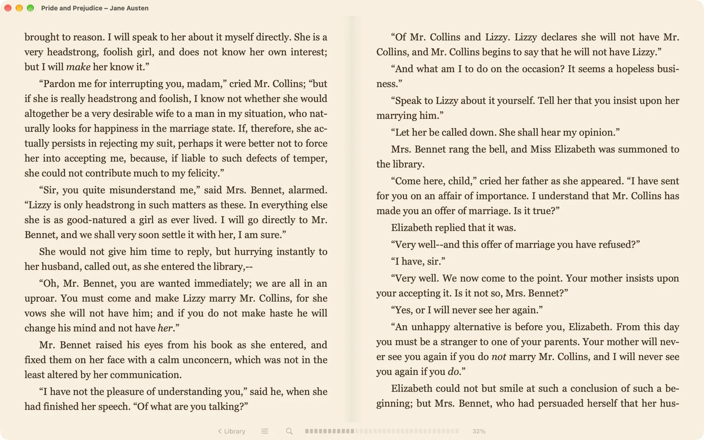
Professional is everything there was: panels in docks and in windows of their own, feature themes, translation, reading aloud and fine-grained settings. Out of it you can build your own reading IDE. Switch at any time in Settings.
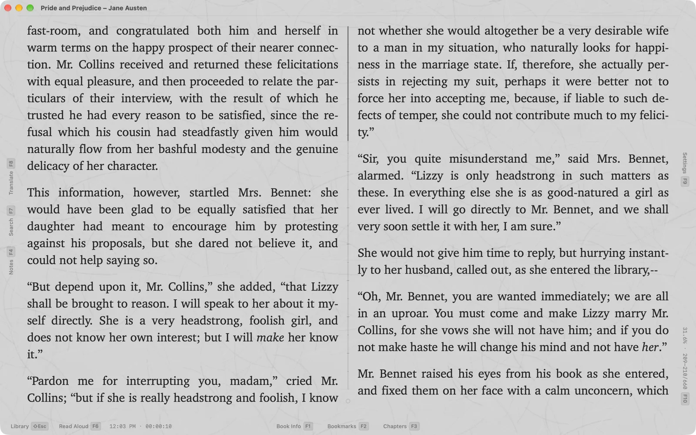
On a wide screen the text splits into columns, up to four, like a newspaper or an album spread. Pages turn in new ways: Flip turns the page like a real one, Cards turn each column over, and with Sink the old page sinks into the paper as the new one settles in its place.
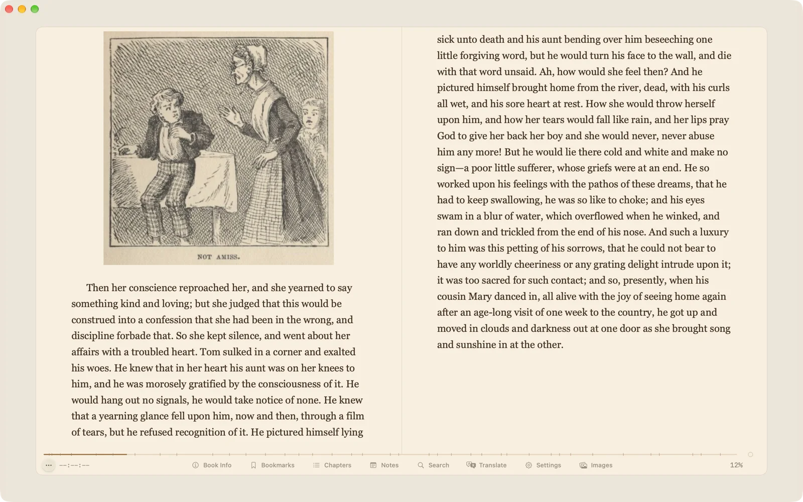
The paper became more real: lined, squared, millimetre, sand-textured or your own picture. The desk around the page has three new surfaces, and the text can be framed — single, double, notched or vintage. Reader settings are gathered on six tabs, a double F9 jumps to any of them, and H turns on Quiet mode: everything but the text disappears.
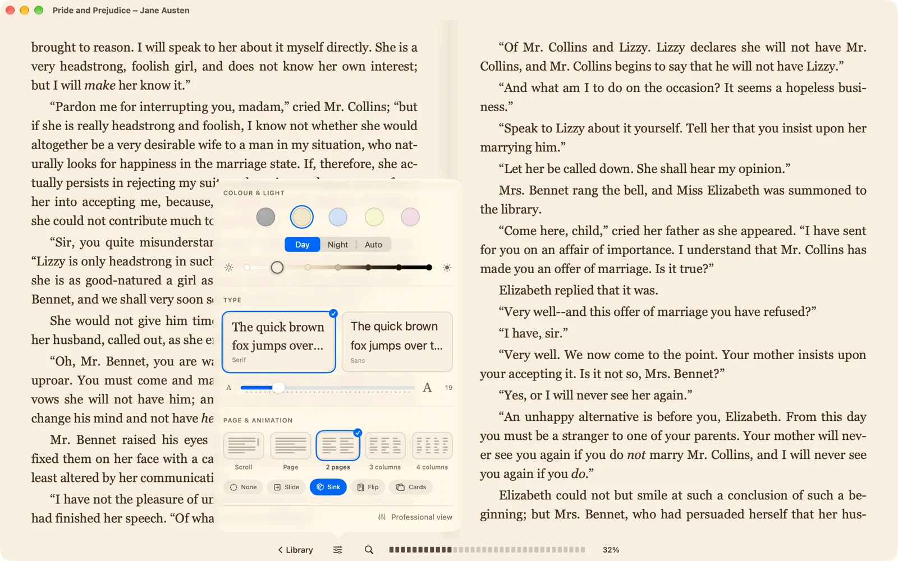
The history of every reading session is there now: when you opened the book, how much you read and on which page you stopped. The book card shows it as a timeline — where the dense evenings were, and where a week’s break. The Reading Journal gathers it all: by day and by book, with search and export to a file.
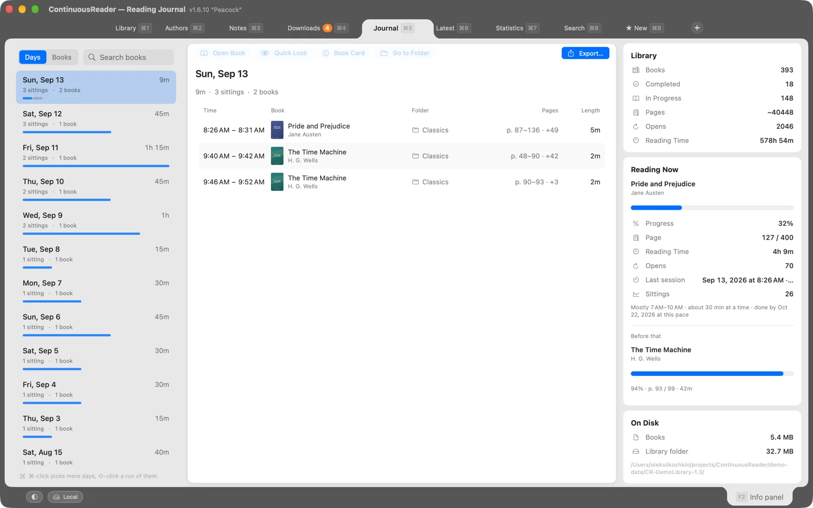
Statistics grew too: charts by book, author and genre for a month, a year or all time, the reading pace, the longest sittings. The report can be saved as Markdown or CSV.
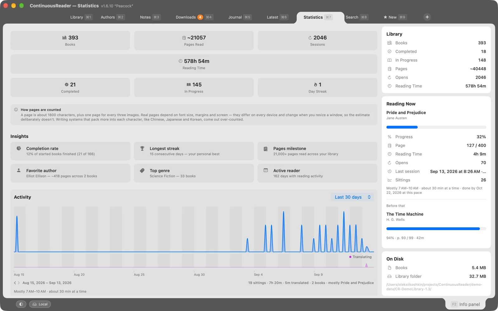
Every author has a page of their own now: their books by series, your note about them and how much of them you have read. It is also the place to tidy up: drag a book from one series to another, rename a series for all its books at once, join the spellings of one name. Any series opens as a tab of its own — every volume in order, and how many are read.
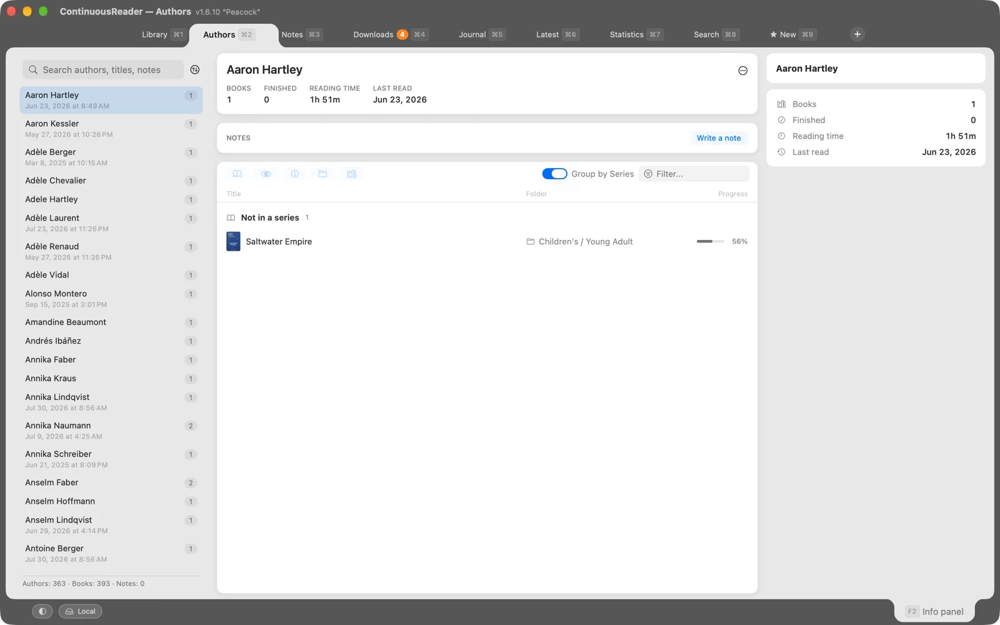
Notes and bookmarks from every book are gathered in one place, even from the books you have already deleted. Search them, recolour them, export them as HTML, Markdown or CSV. Two ideas of this release — this browser and the Flip page turn — came from Elli, a reader. Thank you, Elli.
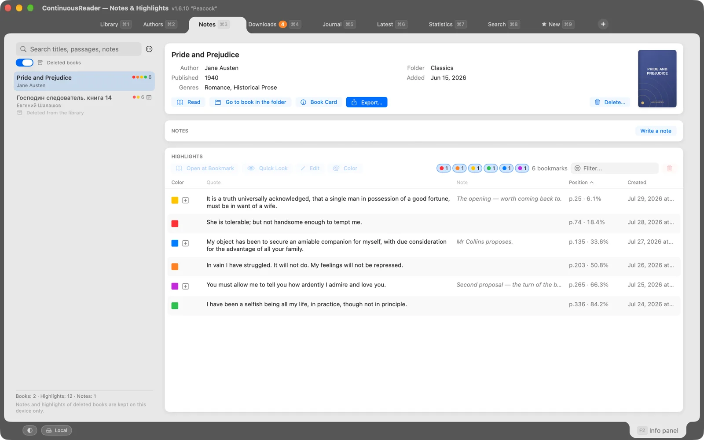
The library’s tabs are properly manageable now: reorder them by drag, close them, hide the whole row (⇧⌘T). Press Esc twice in the library and the tab selector opens: every tab at once, each on its own permanent key. Tabs that don’t fit the row go to a menu at its end.
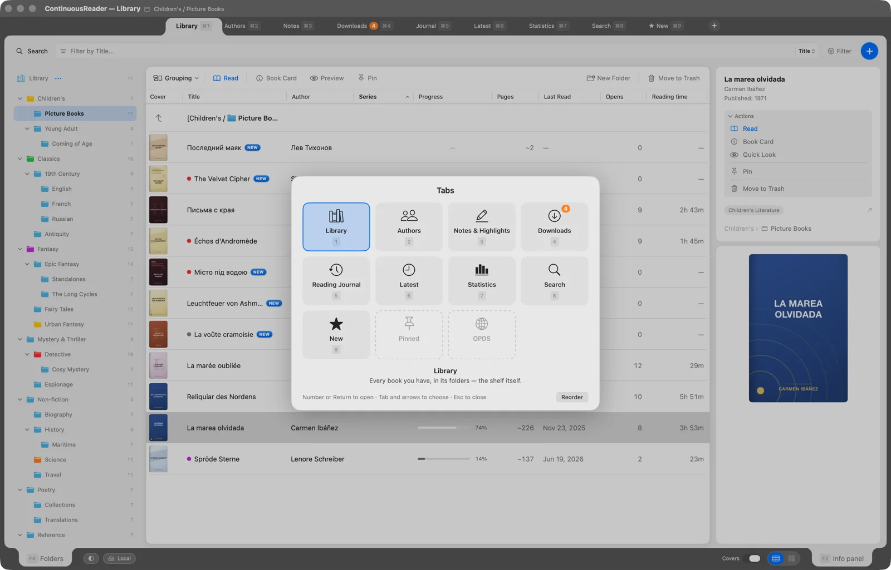
In the reader a double Esc works in two steps: the first hides the open panels, and when there is nothing left to hide it opens the panel selector — every panel at once, each with its key.
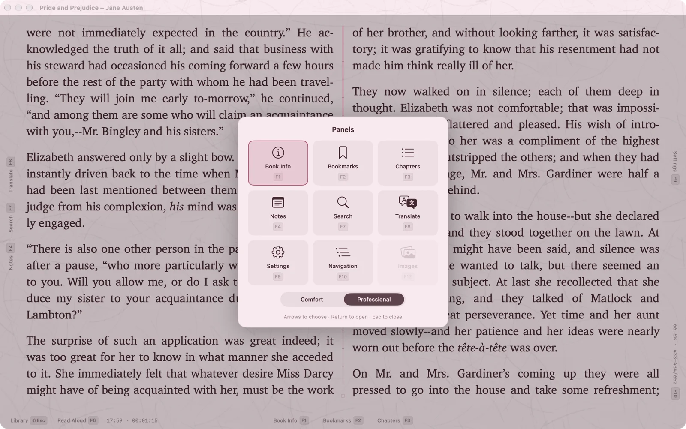
Also in this release: a manual translation mode — type or paste any text and the translation appears; notes on folders; import from Calibre with titles, authors, series and covers; the ISBN from the book itself, searchable with #; and on the iPad and the iPhone the full-screen bottom bar can be assembled to your taste.
Both younger readers got the same two reading modes, the columns, the paper and the page-turn effects. The buttons at the bottom of the home screen open statistics, the reading journal and all your notes; statistics can cover the whole library or just the current book. Close the book in JustReader or take it off the shelf in PlainReader and add it again — notes, bookmarks and statistics are still there: nothing you entered yourself is lost. All of it exports as HTML, Markdown or CSV. PlainReader’s book menu gains Read, Book Card, and Chapters and Bookmarks.
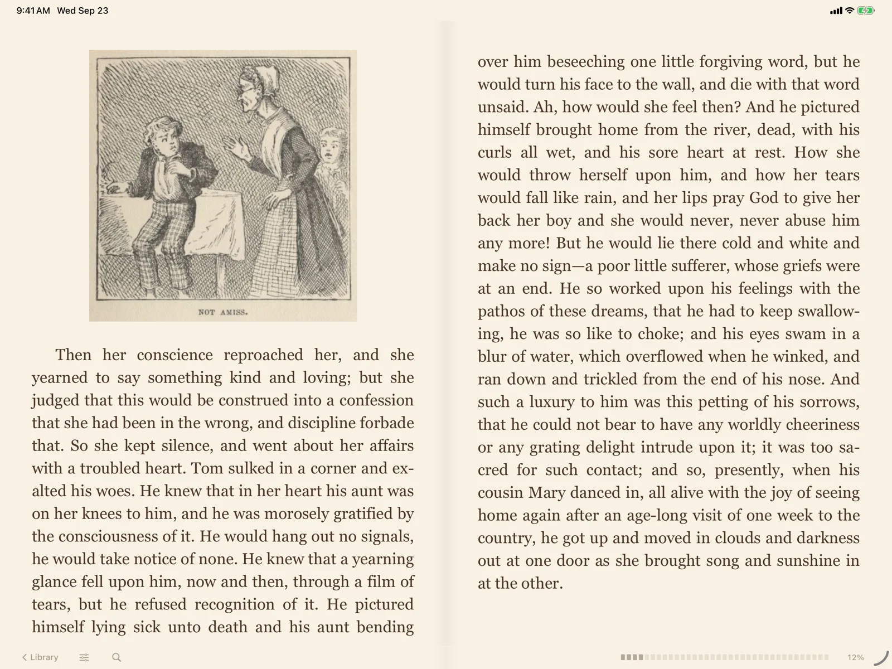
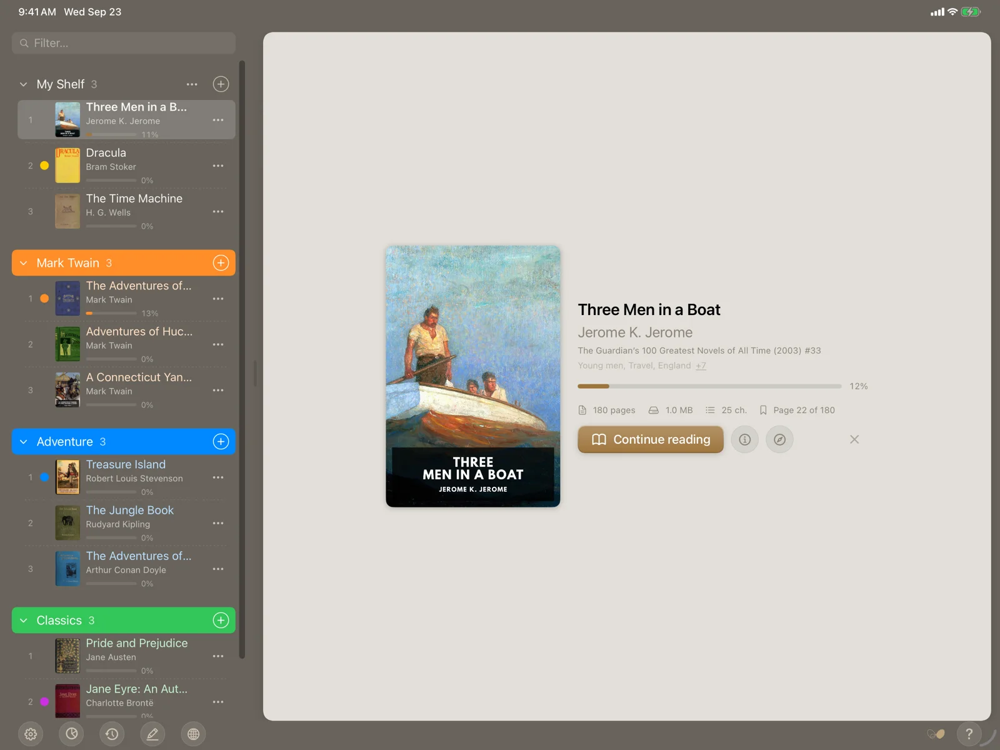
That is the picture. The full list, item by item, is in the changelog.